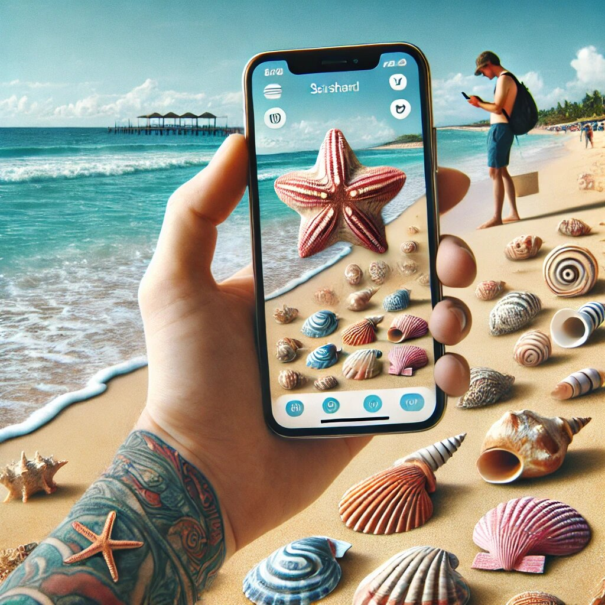

Discover the Best Free Seashell Identification Apps: iNaturalist, Gulf and Atlantic Seashells App, and The Shell Identifier
If you’ve ever strolled along a beach, picked up a seashell, and wondered, “What on earth is this?”—you’re not alone. Seashells are nature’s little mysteries, and identifying them can be both fun and challenging. Luckily, technology has come to the rescue with free seashell identification apps that make it easy for beachcombers, hobbyists, and curious minds to learn more about these oceanic treasures. In this article, we’ll dive into three fantastic apps: iNaturalist, Gulf and Atlantic Seashells App, and The Shell Identifier. Each of these apps has its unique strengths, and we’ll explore why they’re worth downloading for your next beach adventure.

1. iNaturalist: The Ultimate Nature Companion
iNaturalist is like the Swiss Army knife of nature apps. It’s not just for seashells—it’s a one-stop-shop for identifying plants, animals, insects, and, of course, seashells. Developed by the California Academy of Sciences and the National Geographic Society, this app is a favorite among nature enthusiasts worldwide.
Why iNaturalist Stands Out:
- User-Friendly Interface: The app is incredibly easy to use. Simply snap a photo of the seashell, upload it, and let the app’s AI work its magic. Within seconds, you’ll get a list of possible matches. It’s like having a marine biologist in your pocket!
- Community-Driven: One of the coolest features of iNaturalist is its global community of nature lovers. If the AI isn’t sure about your seashell, other users can chime in with their expertise. It’s like a social network for shell enthusiasts!
- Educational Value: iNaturalist doesn’t just tell you the name of the shell—it provides detailed information about its habitat, behavior, and even its scientific classification. You’ll walk away feeling like a seashell expert.
- Free and Open Source: The app is completely free to use, and all the data collected contributes to scientific research. By identifying seashells, you’re helping scientists track biodiversity and protect marine ecosystems. How cool is that?
A Touch of Humor: Think of iNaturalist as the “Wikipedia of nature apps.” It’s reliable, informative, and occasionally surprising. Just don’t be shocked if you accidentally become obsessed with identifying every shell, leaf, and bug you come across. Consider yourself warned!
2. Gulf and Atlantic Seashells App: Your Pocket Guide to Coastal Treasures
If you’re specifically interested in seashells from the Gulf of Mexico and the Atlantic Ocean, the Gulf and Atlantic Seashells App is your go-to resource. This app is designed with beachcombers in mind, offering a comprehensive database of shells found in these regions.
Why Gulf and Atlantic Seashells App is a Must-Have:
- Specialized Focus: Unlike broader nature apps, this one hones in on seashells from the Gulf and Atlantic coasts. It’s perfect for anyone planning a beach vacation in these areas.
- Extensive Database: The app features high-quality images and detailed descriptions of hundreds of seashells. Whether you’ve found a conch, a scallop, or a rare junonia, this app has you covered.
- Offline Access: One of the best features is that you don’t need an internet connection to use it. This is a game-changer for remote beaches where Wi-Fi is as scarce as a mermaid sighting.
- Easy Navigation: The app is organized intuitively, making it simple to browse by shell type, size, or color. It’s like flipping through a beautifully illustrated field guide—but without the weight.
A Touch of Humor: The Gulf and Atlantic Seashells App is like having a seashell-obsessed friend who knows everything about coastal treasures. Just don’t blame us if you start planning your next beach trip solely to test out your new shell-spotting skills!
3. The Shell Identifier: Simplifying Seashell Identification
The Shell Identifier lives up to its name by making seashell identification as straightforward as possible. This app is perfect for beginners who want a no-fuss way to learn about the shells they find.
Why The Shell Identifier is a Gem:
- Simple and Effective: The app’s design is clean and uncluttered, making it easy to focus on the task at hand—identifying seashells. Just upload a photo, and the app does the rest.
- Quick Results: The Shell Identifier is known for its speedy identification process. Within moments, you’ll have a list of potential matches, complete with images and descriptions.
- Learn as You Go: The app provides fun facts and tidbits about each shell, turning your beachcombing adventure into an educational experience. Did you know some seashells can “sing” when held to your ear? Now you do!
- Customizable Experience: You can save your favorite shells, create a personal collection, and even share your findings with friends. It’s like building your own seashell museum.
A Touch of Humor: The Shell Identifier is the Mary Poppins of seashell apps—practically perfect in every way. It’s so easy to use that even your grandma could identify a lightning whelk in seconds. (No offense to grandmas—they’re awesome!)
Why These Apps Are Perfect for Beach Lovers
Whether you’re a seasoned shell collector or a casual beachgoer, these apps offer something for everyone. Here’s why they’re worth adding to your smartphone:
- They’re Free: Let’s face it—free is always better. These apps provide incredible value without costing a dime.
- They’re Educational: You’ll learn more than just the names of shells. You’ll discover their origins, habitats, and even their role in marine ecosystems.
- They’re Fun: Identifying seashells is like solving a mini-mystery. It’s a great way to pass the time while enjoying the beach.
- They’re Convenient: No more lugging around heavy field guides or flipping through endless pages. These apps put all the information you need right at your fingertips.
How to Get Started
Ready to become a seashell identification pro? Here’s how to make the most of these apps:
- Download the Apps: Head to your app store and download iNaturalist, Gulf and Atlantic Seashells App, and The Shell Identifier. They’re all free, so why not try them all?
- Start Exploring: Take a walk along the beach and start collecting shells. Don’t forget to snap clear photos for the best results.
- Share Your Finds: Use the apps’ sharing features to show off your discoveries. Who knows—you might inspire someone else to start their own seashell collection!
- Keep Learning: The more you use these apps, the more you’ll learn. Before you know it, you’ll be the go-to seashell expert among your friends.
Pro Tip:
If you’re feeling extra adventurous, try using all three apps to identify the same shell. It’s like getting a second (and third) opinion from your very own seashell detective team. Who knows? You might just discover a rare gem that even the apps can’t fully explain. After all, the ocean is full of surprises!
Final Thoughts
Seashells are more than just pretty souvenirs—they’re windows into the fascinating world of marine life. With apps like iNaturalist, Gulf and Atlantic Seashells App, and The Shell Identifier, identifying these treasures has never been easier. Whether you’re a curious beginner or a seasoned collector, these apps offer a fun, educational, and convenient way to explore the wonders of the ocean.
So, the next time you’re at the beach, don’t just pick up a shell and wonder what it is—whip out your phone and let these amazing apps do the work for you. Happy shelling!